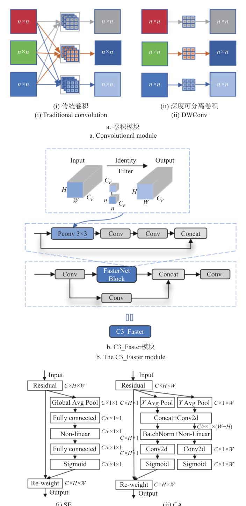
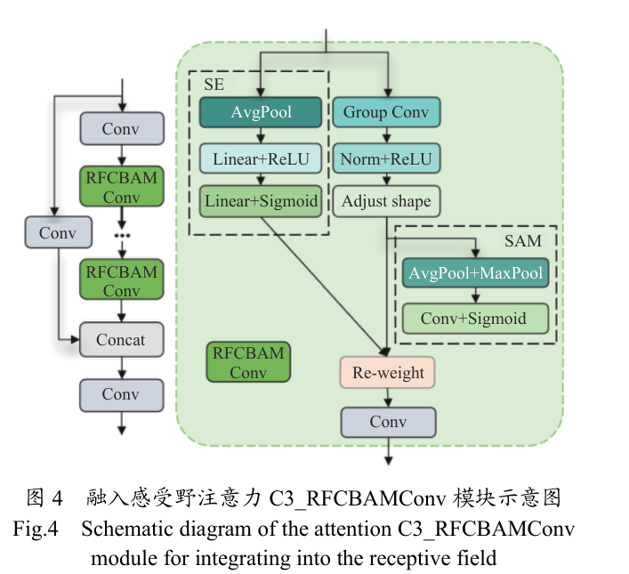
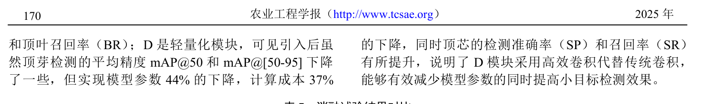
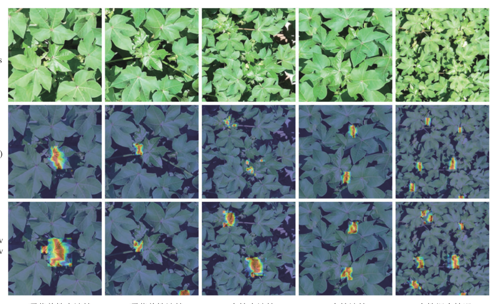
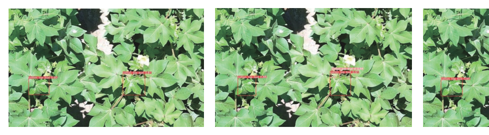

利用顶叶与顶芯的结构关联性双目标建模，DWConv+C3_Faster+CA 轻量化主干 + C3_RFCBAMConv 感受野注意力 + SN-IoU 损失函数。
利用顶叶与顶芯位置相对的结构关联性，顶芯被遮挡时可通过顶叶间接确定打顶位置。
DWConv+C3_Faster 轻量化 + CA 位置注意力 + C3_RFCBAMConv 感受野 + SN-IoU 损失。
mAP@50=97.5%，顶芯准确率 92.4%、召回率 95.0%，参数量下降 44% 至 3.9 M，边缘部署 37 帧/s。


Loss = iou_ratio · (1−LNWD)mean + (1−iou_ratio) · (1−LShape)mean
iou_ratio=0.8。NWD 用 Wasserstein 距离度量小目标相似度，Shape-IoU 加权框的形状尺度约束。



利用顶叶与顶芯位置相对的结构关联性，配合 CA 位置注意力，顶芯召回率提升到 95.0%。
Shape-IoU 的形状尺度约束与 NWD-IoU 的尺度不敏感度量按权重比融合，是小目标损失设计范式。
注意力位置、轻量化选型、损失权重比消融与 Jetson Orin Nano 边缘部署，37 帧/s 说服力强。